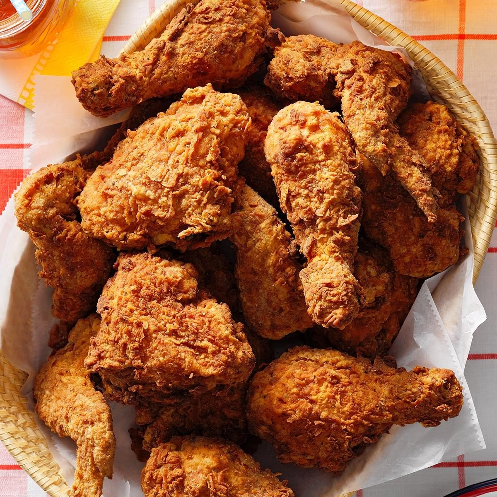

Fried Chicken

Description
Imagine a platter of golden-brown fried chicken placed before you,
each piece glistening under the light with its perfectly crisp, crackling coating.
As you bring it closer, the aroma fills the air—a mouthwatering blend of spices and
savory notes that tease your senses and make your mouth water.
Ingredients
- 1 whole chicken, cut into pieces, or chicken parts (such as drumsticks, thighs, and wings)
- 2 cups buttermilk (or a mixture of milk and lemon juice)
- 1 tablespoon hot sauce (optional, for added flavor)
- Salt and pepper, to taste
- 2 cups all-purpose flour
- 1 tablespoon paprika
- 1 teaspoon garlic powder
- 1 teaspoon onion powder
- 1 teaspoon dried thyme
- 1 teaspoon dried oregano
- 1 teaspoon cayenne pepper (optional, for added heat)
- 1 teaspoon salt
- 1/2 teaspoon black pepper
Steps
-
Mix buttermilk and hot sauce in a large bowl. Add the chicken pieces,
ensuring they are fully submerged. Cover and refrigerate for
at least 4 hours, preferably overnight.
-
In a shallow dish, combine the flour and all the spices.
-
Remove the chicken from the marinade, letting excess buttermilk drip off.
Dredge each piece in the seasoned flour mixture, ensuring an even coating.
-
Heat oil in a deep fryer or large pot to 350°F (175°C). Fry the chicken in batches, turning occasionally, until golden brown and cooked through
(about 12-15 minutes for larger pieces). Use a meat thermometer to ensure the internal temperature reaches 165°F (74°C).
-
Place the fried chicken on a wire rack or paper towels to drain excess oil. Serve hot.